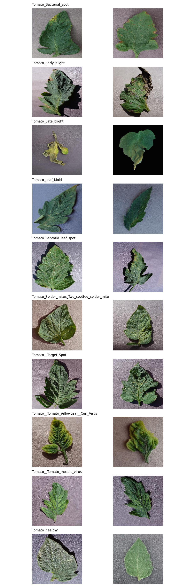
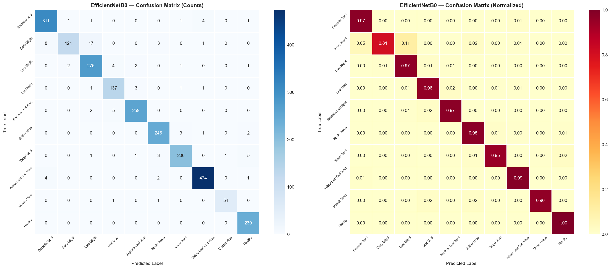

1. Abstract & Introduction
Tomato diseases severely impact agricultural yield and quality. Early and accurate detection is crucial for effective disease management.
This project develops a comprehensive Machine Learning and Deep Learning pipeline to automatically classify tomato leaf diseases from images, comparing classical feature engineering against modern deep learning architectures.
2. Dataset Overview
The PlantVillage dataset subset for Tomatoes was utilized.
- Total Images: 16,011
- Classes: 9 Diseases + 1 Healthy
- Split: 70% Train, 15% Val, 15% Test

3. Feature Engineering (Classical ML)
To train classical ML models, raw images were converted into numerical features:
- HOG: Captured shape and edge gradients.
- LBP: Captured leaf texture patterns.
- Color Histograms: Captured disease discoloration (HSV space).
Dimensionality Reduction: Principal Component Analysis (PCA) was applied to reduce the 1,886-dimensional feature vector down to the top 50 principal components for efficiency.
4. Methodology & Models
We conducted a comparative study across three paradigms:
A. Regression (Baseline)
Attempted to predict class indices continuously. As expected, performance was very poor (R² = 0.30, Acc = 15%), proving regression is unsuitable for categorical classification.
B. Classical ML Classifiers
Trained on PCA features. Evaluated Bayesian Logistic Regression, Decision Trees, Random Forests, Gradient Boosting, and Support Vector Machines (SVM).
C. Deep Learning (Neural Networks)
Trained directly on raw pixel data ($128 \times 128 \times 3$).
- Custom CNN: A 3-block convolutional neural network built from scratch in PyTorch.
- EfficientNetB0: Transfer learning applied to a state-of-the-art pre-trained architecture.
5. Lab Results: Bayesian LR vs SVM
Using the handcrafted PCA features, SVM significantly outperformed Bayesian Logistic Regression due to its RBF kernel's ability to model non-linear boundaries.

6. Final Benchmarking Results
Deep learning models trained on raw images drastically outperformed classical models trained on handcrafted features.
| Model | Accuracy | F1-Score |
|---|---|---|
| EfficientNetB0 | 96.42% | 0.96 |
| Custom CNN | 86.14% | 0.86 |
| SVM (RBF) | 81.18% | 0.81 |
| Gradient Boosting | 70.77% | 0.70 |
| Bayesian LR | 65.65% | 0.65 |

7. Conclusion & Deployment
- Deep Learning Wins: EfficientNetB0 achieved 96.4% accuracy, proving that automated feature extraction via CNNs is superior for complex agricultural image data.
- Deployment: The best model is deployed via a Streamlit Web Application, allowing farmers to upload leaf photos and receive real-time disease diagnostics and confidence probabilities.